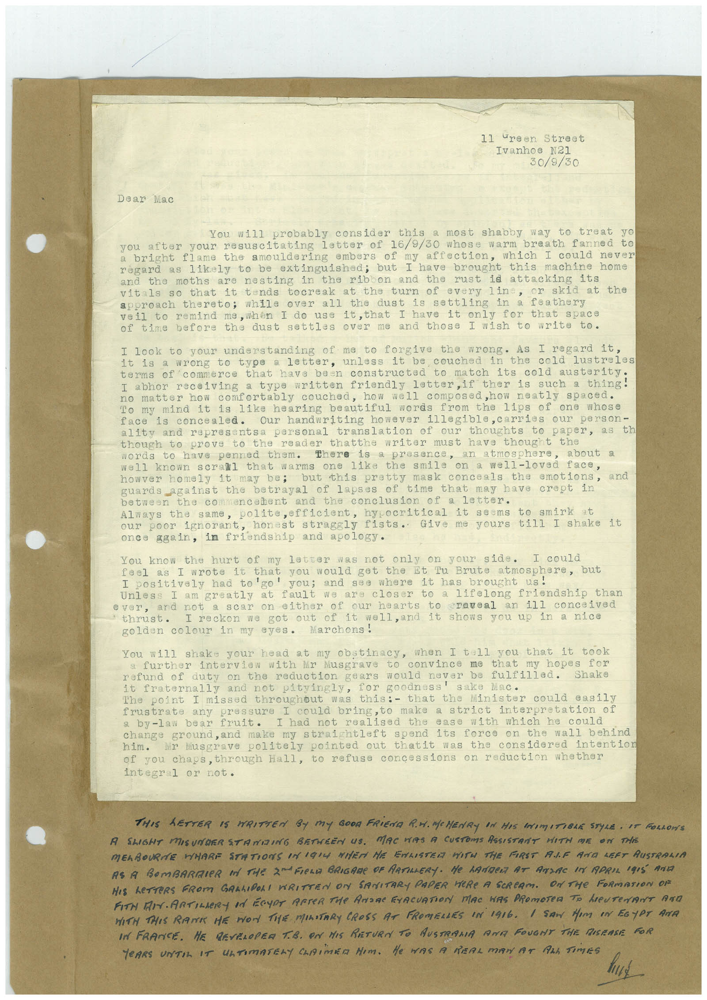

Book 1 · scan 160


Description
Transcription
Context
Review notes
Compare the machine draft with the scan. Handwriting and names need human review.
Artifacts
Edit the artifacts field in this note’s frontmatter to change these records. This summary is generated.
B01-S160-A01 — Typed document — Book 1, scan 160
Types: Typed document
Scope: Whole scanned page; individual items can be split out during review.
Caption: Not mapped yet.
Caption source: Not recorded yet.
Caption status: unmapped
Machine transcription
11 ureen Street Ivanhoe N21 30/9/30 Dear Mac You will probably consider this a most shabby way to treat yo you after your resuscitating letter of 16/9/30 whose warm breath fanned to a bright flame the smouldering embers of my affection, which I could never régard as likely to be extinguished; but I have brought this machine home and the moths are nesting in the ribon and the rust id attacking its vitals so that it tends tocreak at the turn of every line, or skid at the approach thereto; while over all the dust is settling in a feathery veil to remind me, when I do use it,that I have it only for that space of time before the dust settles over me and those I wish to write to. I look to your understanding of me to forgive the wrong. As I regard it, it is a wrong to type a letter, unless it be couched in the cold lustreles terms of commerce that have been constructed to match its cold austerity. I abhor receiving a type written friendly letter, if ther is such a thing! no matter how comfortably couched, how well composed,how neatly spaced. To my mind it is like hearing beautiful words from the lips of one whose face is concealed. Our handwriting however illegible, carries our person- ality and representsa personal translation of our thoughts to paper, as th though to prove to the reader thatthe writer must have thought the words to have penned them. there is a presence, an atmosphere, Nell known scrall that warms one like the smile on a well-loved face, howver homely it may be; but this pretty mask conceals the emotions, guards against the betrayal of lapses of time that may have crept in between the co mencanent and the conclusion of a letter. Always the same, polite, efficient, hypocritical it seems to smirk Our poor ignorant, honest straggly fists. Give me yours till I shake it once again, in friendship and apology. You know the hurt of my letter was not only on your side. feel as I wrote it that you would got the st Iu Brute atmosphere, but I positively had to'go' you; and see where it has brought us! Unless I am greatly at fault we are closer to a lifelong friendship than ever, and not a scar on either of our hearts to craveal an ill conceived thrust• I reckon we got out of it well, and it shows you up in a nice golden colour in my eyes. Marchons! You will shake your head at my obstinacy, when I tell you that it took a further interview with Mr Musgrave to convince me that my hopes for refund of duty on the reduction gears would never be fulfilled. Shake it fraternally and not pityingly, The point I missed throughout was this:- that the Minister could easily frustrate any pressura I could bring, to make a strict interpretation of a by-law bear fruit. ease with which he could change ground, and make my straightleft spend its force on the wall behind him. Mr Masgrave politely pointed out thatit was the considered intention of you chaps, through Hall, to refuse concessions on reduction whether integral or not. THIS LETTER IS WRITTEN BY MY GOOD FRIEDA R.M. MCHENRY IN HIS INIMITIBLE STYLE • IT ROLLONS A SLIGHT MISUNDERSTAMDING BETHREN US. MAC WAS A CUSTOMS ASSISTRNT HITH ME ON THE MELBOURNE WHARE STATIONS UNIGIG WIER HE ENLISTER WITH THE FIRST ALF AND LEFT AUSTRALIA AS A BOMBARIER IN THE 2MFIELE BRIGARE OF ARTILLERY. HE LANDER AT ATLAC IN APRIL IRIS ANI HIS LETTERS FROM GARLIDORI WRITTEN ON SANITARY PAPER HERE A SERCAM. ON THE FORMATION OF FIN MAARTILERY Id ECUAT AFTeR THe ANaR FrACUATION MAC WAS PRomoTeD To heuTenT Arn WITH THIS RATE HE MON TIE MILITARY CROSS AT FROMELLES IN 1916. / SON Hem eN EGyPT ANa IN FRANCE. HE DEVELOPER T.B. ON HIS RETURN TO AUSTRAMA ARE FOUGNT THE DISEASE FOR TEARS TIL IT ATIMATELY CLAiMED HIM. He WAS A REAL MAN AT ALL TiMES